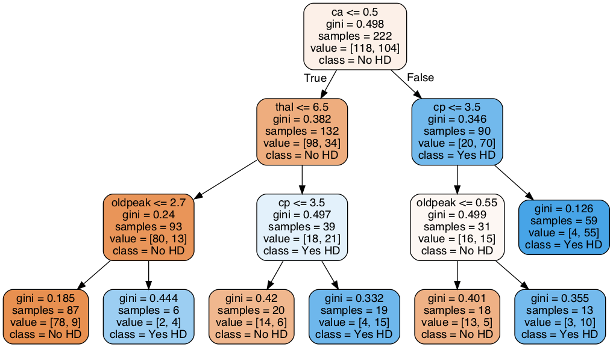

Classification Trees
Contents
14. Classification Trees¶
這堂課會用 scikit-learn and Cost Complexity Pruning 來建立 Classification Tree
要使用的資料來自 UCI Machine Learning Repository 裡的 Heart Disease Dataset
目標是：預測病人是否有 heart disease based on 這個人的性別、年齡、血壓、和各式各樣的 metrics. 
Classification Trees 是一個很好解釋的模型，尤其是在你要跟你老闆或user報告，這個預測結果是怎麼來的的時候 (how the decisions are being made)
舉例來說，我預測某個病人有心臟病，且他是位於上圖的最右下角。那我的解釋就是：因為該病人屬於 {ca > 0.5, cp<=3.5, oldpeak > 0.55} 這一組。而根據過去資料，這一組的13個病人中有 10 個病人都有心臟病，所以我預測他有心臟病。
這堂課會涵蓋到的主題：
-
Identifying Missing Data
Dealing with Missing Data
Formatting the Data for Decision Trees
Splitting data into Dependent and Independent Variables
One-Hot-Encoding
Optimzing the tree with Cost Complexity Pruning
Visualizing Alpha
Using Cross Validation to find the best value for Alpha
Building, Drawing, Interpreting and Evaluating the Final Classification Tree
14.1. Import the modules¶
import pandas as pd # to load and manipulate data and for One-Hot Encoding
import numpy as np # to calculate the mean and standard deviation
import matplotlib.pyplot as plt # to draw graphs
from sklearn.tree import DecisionTreeClassifier # to build a classification tree
from sklearn.tree import plot_tree # to draw a classification tree
from sklearn.model_selection import train_test_split # to split data into training and testing sets
from sklearn.model_selection import cross_val_score # for cross validation
from sklearn.metrics import confusion_matrix # to create a confusion matrix
from sklearn.metrics import plot_confusion_matrix # to draw a confusion matrix
from pandas_profiling import ProfileReport
from ipywidgets import FloatProgress
!jupyter nbextension enable --py widgetsnbextension
Enabling notebook extension jupyter-js-widgets/extension...
- Validating: OK
14.2. Import the data¶
df = pd.read_csv('processed.cleveland.data',
header=None)
## 要自己下載也可以
# df = pd.read_csv('https://archive.ics.uci.edu/ml/machine-learning-databases/heart-disease/processed.cleveland.data',
# header=None)
df.columns = ['age',
'sex',
'cp',
'restbp',
'chol',
'fbs',
'restecg',
'thalach',
'exang',
'oldpeak',
'slope',
'ca',
'thal',
'hd']
df.head()
| age | sex | cp | restbp | chol | fbs | restecg | thalach | exang | oldpeak | slope | ca | thal | hd | |
|---|---|---|---|---|---|---|---|---|---|---|---|---|---|---|
| 0 | 63.0 | 1.0 | 1.0 | 145.0 | 233.0 | 1.0 | 2.0 | 150.0 | 0.0 | 2.3 | 3.0 | 0.0 | 6.0 | 0 |
| 1 | 67.0 | 1.0 | 4.0 | 160.0 | 286.0 | 0.0 | 2.0 | 108.0 | 1.0 | 1.5 | 2.0 | 3.0 | 3.0 | 2 |
| 2 | 67.0 | 1.0 | 4.0 | 120.0 | 229.0 | 0.0 | 2.0 | 129.0 | 1.0 | 2.6 | 2.0 | 2.0 | 7.0 | 1 |
| 3 | 37.0 | 1.0 | 3.0 | 130.0 | 250.0 | 0.0 | 0.0 | 187.0 | 0.0 | 3.5 | 3.0 | 0.0 | 3.0 | 0 |
| 4 | 41.0 | 0.0 | 2.0 | 130.0 | 204.0 | 0.0 | 2.0 | 172.0 | 0.0 | 1.4 | 1.0 | 0.0 | 3.0 | 0 |
14.3. 資料檢查 & 清理¶
從上表看起來，每一欄都是數字，但其實他是把類別型的也用數字呈現了。
說明一下各欄位的意義：
age, Float
sex - Category
0 = female
1 = male
cp, chest pain, 胸痛, Category
1 = typical angina
2 = atypical angina
3 = non-anginal pain
4 = asymptomatic
restbp, resting blood pressure (in mm Hg),靜止血壓, Float
chol, serum cholesterol in mg/dl, 血清膽固醇, Float
fbs, fasting blood sugar, 飯前血糖, Category
0 = >=120 mg/dl
1 = <120 mg/dl
restecg, resting electrocardiographic results, 靜態心電圖結果, Category
1 = normal
2 = having ST-T wave abnormality
3 = showing probable or definite left ventricular hypertrophy
thalach, maximum heart rate achieved, 最高心跳率, Float
exang, exercise induced angina, 運動造成的心絞痛, Category
0 = no
1 = yes
oldpeak, ST depression induced by exercise relative to rest. 心電圖的ST段波形下沉的程度 -> 心肌梗塞的現象, Float
slope, the slope of the peak exercise ST segment, 心電圖的ST段的斜率, Category
1 = upsloping
2 = flat
3 = downsloping
ca, number of major vessels (0-3) colored by fluoroscopy, 幾條大血管有被螢光劑染色, Float
thal, thalium heart scan, 心肌灌流掃描(thalium是鉈-201，掃描時要注射的放射劑), Category
3 = normal (no cold spots)
6 = fixed defect (cold spots during rest and exercise)
7 = reversible defect (when cold spots only appear during exercise)
hd, diagnosis of heart disease, the predicted attribute 心臟病診斷結果，我們的 y
我先將資料類型整理如下：
categorical_columns = ["sex", "cp", "fbs", "restecg", "exang", "slope", "thal"]
numerical_columns = ["age", "restbp", "chol", "thalach", "oldpeak", "ca"]
來看一下目前的資料 type
df.info()
<class 'pandas.core.frame.DataFrame'>
RangeIndex: 303 entries, 0 to 302
Data columns (total 14 columns):
# Column Non-Null Count Dtype
--- ------ -------------- -----
0 age 303 non-null float64
1 sex 303 non-null float64
2 cp 303 non-null float64
3 restbp 303 non-null float64
4 chol 303 non-null float64
5 fbs 303 non-null float64
6 restecg 303 non-null float64
7 thalach 303 non-null float64
8 exang 303 non-null float64
9 oldpeak 303 non-null float64
10 slope 303 non-null float64
11 ca 303 non-null object
12 thal 303 non-null object
13 hd 303 non-null int64
dtypes: float64(11), int64(1), object(2)
memory usage: 33.3+ KB
發現蠻怪的，剛剛看表格，全都是數字，所以應該都要被判讀為 float64，但 ca and thal, 卻呈現是
object，表示資料裡面有 mixtures of things (例如數字 + 字母)，但，ca(幾條血管被螢光劑染色) 和 thal(心機灌流掃描的結果) 應該就是數值，所以我們來檢查看看
df['ca'].unique()
array(['0.0', '3.0', '2.0', '1.0', '?'], dtype=object)
我們發現，ca 應該只有 0, 3, 2, 1 這四種值，但多出來
?，可見?就是個 missing data
df['thal'].unique()
array(['6.0', '3.0', '7.0', '?'], dtype=object)
一樣，都有
?在搗亂
14.3.1. identify & deal with missing data¶
剛剛有檢查到，他的 NA 是標成
?.現在把
?換成 python 看得懂的 NA 的樣子吧：
df.loc[df.ca == "?", "ca"] = None
df.loc[df.thal == "?", "thal"] = None
df.info()
<class 'pandas.core.frame.DataFrame'>
RangeIndex: 303 entries, 0 to 302
Data columns (total 14 columns):
# Column Non-Null Count Dtype
--- ------ -------------- -----
0 age 303 non-null float64
1 sex 303 non-null float64
2 cp 303 non-null float64
3 restbp 303 non-null float64
4 chol 303 non-null float64
5 fbs 303 non-null float64
6 restecg 303 non-null float64
7 thalach 303 non-null float64
8 exang 303 non-null float64
9 oldpeak 303 non-null float64
10 slope 303 non-null float64
11 ca 299 non-null object
12 thal 301 non-null object
13 hd 303 non-null int64
dtypes: float64(11), int64(1), object(2)
memory usage: 33.3+ KB
sklearn 的 classification tree 無法處理 missing values，所以我們有兩種處理方法：
刪除整列
補值
因為 missing 的很少，所以這邊直接整列刪除就
df_no_missing = df.dropna()
print("original rows: ", len(df))
print("nonmissing rows: ", len(df_no_missing))
original rows: 303
nonmissing rows: 297
cat_cols = ['cp', 'restecg', 'slope', 'thal']
for col in cat_cols:
df_no_missing.loc[:, col] = df_no_missing[col].astype("object")
df_no_missing.info()
<class 'pandas.core.frame.DataFrame'>
Int64Index: 297 entries, 0 to 301
Data columns (total 14 columns):
# Column Non-Null Count Dtype
--- ------ -------------- -----
0 age 297 non-null float64
1 sex 297 non-null float64
2 cp 297 non-null object
3 restbp 297 non-null float64
4 chol 297 non-null float64
5 fbs 297 non-null float64
6 restecg 297 non-null object
7 thalach 297 non-null float64
8 exang 297 non-null float64
9 oldpeak 297 non-null float64
10 slope 297 non-null object
11 ca 297 non-null object
12 thal 297 non-null object
13 hd 297 non-null int64
dtypes: float64(8), int64(1), object(5)
memory usage: 34.8+ KB
/var/folders/j9/71c8r2vs343cb9329xbww0240000gn/T/ipykernel_43117/3365937875.py:3: SettingWithCopyWarning:
A value is trying to be set on a copy of a slice from a DataFrame.
Try using .loc[row_indexer,col_indexer] = value instead
See the caveats in the documentation: https://pandas.pydata.org/pandas-docs/stable/user_guide/indexing.html#returning-a-view-versus-a-copy
df_no_missing.loc[:, col] = df_no_missing[col].astype("object")
14.4. Format Data Part 1: Y and X form¶
接下來，要把資料做成可以餵進去 sklean 的樣子
ALSO NOTE: In the code below we are using copy() to copy the data by value. By default, pandas uses copy by reference. Using copy() ensures that the original data df_no_missing is not modified when we modify X or y. In other words, if we make a mistake when we are formatting the columns for classification trees, we can just re-copy df_no_missing, rather than reload the original data and remove the missing values etc.
X = df_no_missing.drop('hd', axis=1).copy() # 用 copy 的方式來做，才不會等等改 X 時， df_nomissing 跟著變
y = df_no_missing['hd'].copy()
y[y>0] = 1
X_train, X_test, y_train, y_test = train_test_split(X, y, random_state=42)
clf_dt = DecisionTreeClassifier(random_state=42, ccp_alpha=0.014)
clf_dt = clf_dt.fit(X_train, y_train)
plt.figure(figsize=(15, 7.5))
plot_tree(clf_dt,
filled=True,
rounded=True,
class_names=["No HD", "Yes HD"],
feature_names=X.columns);
14.5. Format the Data Part 2: One-Hot Encoding¶
Now that we have split the dataframe into two pieces, X, which contains the data we will use to predict classifications, and y, which contains the known classifications in our training dataset, we need to take a closer look at the variables in X. The list bellow tells us what each variable represents and the type of data (float or categorical) it should contain:
age, Float
sex - Category
0 = female
1 = male
cp, chest pain, Category
1 = typical angina
2 = atypical angina
3 = non-anginal pain
4 = asymptomatic
restbp, resting blood pressure (in mm Hg), Float
chol, serum cholesterol in mg/dl, Float
fbs, fasting blood sugar, Category
0 = >=120 mg/dl
1 = <120 mg/dl
restecg, resting electrocardiographic results, Category
1 = normal
2 = having ST-T wave abnormality
3 = showing probable or definite left ventricular hypertrophy
thalach, maximum heart rate achieved, Float
exang, exercise induced angina, Category
0 = no
1 = yes
oldpeak, ST depression induced by exercise relative to rest. Float
slope, the slope of the peak exercise ST segment, Category
1 = upsloping
2 = flat
3 = downsloping
ca, number of major vessels (0-3) colored by fluoroscopy, Float
thal, thalium heart scan, Category
3 = normal (no cold spots)
6 = fixed defect (cold spots during rest and exercise)
7 = reversible defect (when cold spots only appear during exercise)
Now, just to review, let’s look at the data types in X to remember how python is seeing the data right now.
X.dtypes
age float64
sex float64
cp object
restbp float64
chol float64
fbs float64
restecg object
thalach float64
exang float64
oldpeak float64
slope object
ca object
thal object
dtype: object
So, we see that age, restbp, chol and thalach are all float64, which is good, because we want them to be floating point numbers. All of the other columns, however, need to be inspected to make sure they only contain reasonable values, and some of them need to change. This is because, while scikit learn Decision Trees natively support continuous data, like resting blood preasure (restbp) and maximum heart rate (thalach), they do not natively support categorical data, like chest pain (cp), which contains 4 different categories. Thus, in order to use categorical data with scikit learn Decision Trees, we have to use a trick that converts a column of categorical data into multiple columns of binary values. This trick is called One-Hot Encoding.
At this point you may be wondering, “what’s wrong with treating categorical data like continuous data?” To answer that question, let’s look at an example: For the cp (chest pain) column, we have 4 options:
typical angina
atypical angina
non-anginal pain
asymptomatic
If we treated these values, 1, 2, 3 and 4, like continuous data, then we would assume that 4, which means “asymptomatic”, is more similar to 3, which means “non-anginal pain”, than it is to 1 or 2, which are other types of chest pain. That means the decision tree would be more likely to cluster the patients with 4s and 3s together than the patients with 4s and 1s together. In contrast, if we treat these numbers like categorical data, then we treat each one as a separate category that is no more or less similar to any of the other categories. Thus, the likelihood of clustering patients with 4s with 3s is the same as clustering 4s with 1s, and that approach is more reasonable.
Now let’s inspect and, if needed, convert the columns that contain categorical and integer data into the correct datatypes. We’ll start with cp (chest pain) by inspecting all of its unique values:
X['cp'].unique()
array([1.0, 4.0, 3.0, 2.0], dtype=object)
So, the good news is that cp only contains the values it is supposed to contain, so we will convert it, using One-Hot Encoding, into a series of columns that only contains 0s and 1s.
NOTE: There are many different ways to do One-Hot Encoding in Python. Two of the more popular methods are ColumnTransformer() (from scikit-learn) and get_dummies() (from pandas), and the both methods have pros and cons. ColumnTransformer() has a very cool feature where it creates a persistent function that can validate data that you get in the future. For example, if you build your Decision Tree using a categorical variable favorite color that has red, blue and green options, then ColumnTransformer() can remember those options and later on when your Decision Tree is being used in a production system, if someone says their favorite color is orange, then ColumnTransformer() can throw an error or handle the situation in some other nice way. The downside of ColumnTransformer() is that it turns your data into an array and looses all of the column names, making it harder to verify that your usage of ColumnTransformer() worked as you intended it to. In contrast, get_dummies() leaves your data in a dataframe and retains the column names, making it much easier to verify that it worked as intended. However, it does not have the persistent behavior that ColumnTransformer() has. So, for the sake of learning how One-Hot Encoding works, I prefer to use get_dummies(). However, once you are comfortable with One-Hot Encoding, I encourage you to investigate using ColumnTransformer().
First, before we commit to converting cp with One-Hot Encoding, let’s just see what happens when we convert cp without saving the results. This will make it easy to see how get_dummies() works.
## For this tutorial, we will use get_dummies() to do One-Hot Encoding,
## but just know that there are other options.
pd.get_dummies(X, columns=['cp']).head()
/Volumes/GoogleDrive/我的雲端硬碟/0. codepool_python/python_ds/python_ds_env/lib/python3.8/site-packages/pandas/core/algorithms.py:794: FutureWarning: In a future version, the Index constructor will not infer numeric dtypes when passed object-dtype sequences (matching Series behavior)
uniques = Index(uniques)
| age | sex | restbp | chol | fbs | restecg | thalach | exang | oldpeak | slope | ca | thal | cp_1.0 | cp_2.0 | cp_3.0 | cp_4.0 | |
|---|---|---|---|---|---|---|---|---|---|---|---|---|---|---|---|---|
| 0 | 63.0 | 1.0 | 145.0 | 233.0 | 1.0 | 2.0 | 150.0 | 0.0 | 2.3 | 3.0 | 0.0 | 6.0 | 1 | 0 | 0 | 0 |
| 1 | 67.0 | 1.0 | 160.0 | 286.0 | 0.0 | 2.0 | 108.0 | 1.0 | 1.5 | 2.0 | 3.0 | 3.0 | 0 | 0 | 0 | 1 |
| 2 | 67.0 | 1.0 | 120.0 | 229.0 | 0.0 | 2.0 | 129.0 | 1.0 | 2.6 | 2.0 | 2.0 | 7.0 | 0 | 0 | 0 | 1 |
| 3 | 37.0 | 1.0 | 130.0 | 250.0 | 0.0 | 0.0 | 187.0 | 0.0 | 3.5 | 3.0 | 0.0 | 3.0 | 0 | 0 | 1 | 0 |
| 4 | 41.0 | 0.0 | 130.0 | 204.0 | 0.0 | 2.0 | 172.0 | 0.0 | 1.4 | 1.0 | 0.0 | 3.0 | 0 | 1 | 0 | 0 |
As we can see in the printout above, get_dummies() puts all of the columns it does not process in the front and it puts cp at the end. It also splits cp into 4 columns, just like we expected it. cp_1.0 is 1 for any patient that scored a 1 for chest pain and 0 for all other patients. cp_2.0 is 1 for any patient that scored 2 for chest pain and 0 for all other patients. cp_3.0 is 1 for any patient that scored 3 for chest pain and cp_4.0 is 1 for any patient that scored 4 for chest pain.
Now that we see how get_dummies() works, let’s use it on the four categorical columns that have more than 2 categories and save the result.
NOTE: In a real situation (not a tutorial like this), you should verify all 5 of these columns only contain the accepted categories. However, for this tutorial, I’ve already done that for us, so we can skip that step.
X_encoded = pd.get_dummies(X, columns=['cp',
'restecg',
'slope',
'thal'])
X_encoded.head()
/Volumes/GoogleDrive/我的雲端硬碟/0. codepool_python/python_ds/python_ds_env/lib/python3.8/site-packages/pandas/core/algorithms.py:794: FutureWarning: In a future version, the Index constructor will not infer numeric dtypes when passed object-dtype sequences (matching Series behavior)
uniques = Index(uniques)
| age | sex | restbp | chol | fbs | thalach | exang | oldpeak | ca | cp_1.0 | ... | cp_4.0 | restecg_0.0 | restecg_1.0 | restecg_2.0 | slope_1.0 | slope_2.0 | slope_3.0 | thal_3.0 | thal_6.0 | thal_7.0 | |
|---|---|---|---|---|---|---|---|---|---|---|---|---|---|---|---|---|---|---|---|---|---|
| 0 | 63.0 | 1.0 | 145.0 | 233.0 | 1.0 | 150.0 | 0.0 | 2.3 | 0.0 | 1 | ... | 0 | 0 | 0 | 1 | 0 | 0 | 1 | 0 | 1 | 0 |
| 1 | 67.0 | 1.0 | 160.0 | 286.0 | 0.0 | 108.0 | 1.0 | 1.5 | 3.0 | 0 | ... | 1 | 0 | 0 | 1 | 0 | 1 | 0 | 1 | 0 | 0 |
| 2 | 67.0 | 1.0 | 120.0 | 229.0 | 0.0 | 129.0 | 1.0 | 2.6 | 2.0 | 0 | ... | 1 | 0 | 0 | 1 | 0 | 1 | 0 | 0 | 0 | 1 |
| 3 | 37.0 | 1.0 | 130.0 | 250.0 | 0.0 | 187.0 | 0.0 | 3.5 | 0.0 | 0 | ... | 0 | 1 | 0 | 0 | 0 | 0 | 1 | 1 | 0 | 0 |
| 4 | 41.0 | 0.0 | 130.0 | 204.0 | 0.0 | 172.0 | 0.0 | 1.4 | 0.0 | 0 | ... | 0 | 0 | 0 | 1 | 1 | 0 | 0 | 1 | 0 | 0 |
5 rows × 22 columns
14.6. BAM!!!¶
Now we need to talk about the 3 categorical columns that only contain 0s and 1s: sex, fbs (fasting blood sugar), and exang (exercise induced angina). As we can see, One-Hot Encoding converts a column with more than 2 categories, like cp (chest pain) into multiple columns of 0s and 1s. Since sex, fbs, and exang only have 2 categories and only contain 0s and 1s to begin with, we do not have to do anything special to them, so we’re done formatting the data for the Classification Tree.
NOTE: In practice we would use unique() to verify that they only contain 0s and 1s, but to save time…trust me!
Now, one last thing before we build a Classification Tree. y doesn’t just contain 0s and 1s. Instead, it has 5 different levels of heart disease. 0 = no heart disease and 1-4 are various degrees of heart disease. We can see this with unique():
y.unique()
array([0, 1])
In this tutorial we’re only making a tree that does simple classification and only care if someone has heart disease or not, so we need to convert all numbers > 0 to 1.
y_not_zero_index = y > 0 # get the index for each non-zero value in y
y[y_not_zero_index] = 1 # set each non-zero value in y to 1
y.unique() # verify that y only contains 0 and 1.
array([0, 1])
14.7. Double BAM!!!¶
We have finally finished formatting the data for making a Classification Tree, so let’s do it!!!
14.8. Build A Preliminary Classification Tree¶
At long last, the data are correctly formatted for making a Classification Tree. Now we simply split the data into training and testing sets and build the tree.
## split the data into training and testing sets
X_train, X_test, y_train, y_test = train_test_split(X_encoded, y, random_state=42)
## create a decisiont tree and fit it to the training data
clf_dt = DecisionTreeClassifier(random_state=42)
clf_dt = clf_dt.fit(X_train, y_train)
## NOTE: We can plot the tree and it is huge!
plt.figure(figsize=(15, 7.5))
plot_tree(clf_dt,
filled=True,
rounded=True,
class_names=["No HD", "Yes HD"],
feature_names=X_encoded.columns);
OK, we’ve built a Classification Tree for classification. Let’s see how it performs on the Testing Dataset by running the Testing Dataset down the tree and drawing a Confusion Matrix.
## plot_confusion_matrix() will run the test data down the tree and draw
## a confusion matrix.
plot_confusion_matrix(clf_dt, X_test, y_test, display_labels=["Does not have HD", "Has HD"])
/Volumes/GoogleDrive/我的雲端硬碟/0. codepool_python/python_ds/python_ds_env/lib/python3.8/site-packages/sklearn/utils/deprecation.py:87: FutureWarning: Function plot_confusion_matrix is deprecated; Function `plot_confusion_matrix` is deprecated in 1.0 and will be removed in 1.2. Use one of the class methods: ConfusionMatrixDisplay.from_predictions or ConfusionMatrixDisplay.from_estimator.
warnings.warn(msg, category=FutureWarning)
<sklearn.metrics._plot.confusion_matrix.ConfusionMatrixDisplay at 0x13004dac0>
In the confusion matrix, we see that of the 31 + 11 = 42 people that did not have Heart Disease, 31 (74%) were correctly classified. And of the 7 + 26 = 33 people that have Heart Disease, 26 (79%) were correctly classified. Can we do better? One thing that might be holding this Classification Tree back is that it may have overfit the training dataset. So let’s prune the tree. Pruning, in theory, should solve the overfitting problem and give us better results.
14.9. Cost Complexity Pruning Part 1: Visualize alpha¶
Decision Trees are notorious for being overfit to the Training Dataset, and there are a lot of parameters, like max_depth and min_samples, that are designed to reduce overfitting. However, pruning a tree with cost complexity pruning can simplify the whole process of finding a smaller tree that impoves the accuracy with the Testing Dataset.
Pruning a decision tree is all about finding the right value for the pruning parameter, alpha, which controls how little or how much pruning happens. One way to find the optimal value for alpha is to plot the accuracy of the tree as a function of different values. We’ll do this for both the Training Dataset and the Testing Dataset.
First, let’s extract the different values of alpha that are available for this tree and build a pruned tree for each value for alpha. NOTE: We omit the maximum value for alpha with ccp_alphas = ccp_alphas[:-1] because it would prune all leaves, leaving us with only a root instead of a tree.
path = clf_dt.cost_complexity_pruning_path(X_train, y_train) # determine values for alpha
ccp_alphas = path.ccp_alphas # extract different values for alpha
ccp_alphas = ccp_alphas[:-1] # exclude the maximum value for alpha
path = clf_dt.cost_complexity_pruning_path(X_train, y_train) # determine values for alpha
ccp_alphas = path.ccp_alphas # extract different values for alpha
ccp_alphas = ccp_alphas[:-1] # exclude the maximum value for alpha
clf_dts = [] # create an array that we will put decision trees into
## now create one decision tree per value for alpha and store it in the array
for ccp_alpha in ccp_alphas:
clf_dt = DecisionTreeClassifier(random_state=0, ccp_alpha=ccp_alpha)
clf_dt.fit(X_train, y_train)
clf_dts.append(clf_dt)
Now let’s graph the accuracy of the trees using the Training Dataset and the Testing Dataset as a function of alpha.
train_scores = [clf_dt.score(X_train, y_train) for clf_dt in clf_dts]
test_scores = [clf_dt.score(X_test, y_test) for clf_dt in clf_dts]
fig, ax = plt.subplots()
ax.set_xlabel("alpha")
ax.set_ylabel("accuracy")
ax.set_title("Accuracy vs alpha for training and testing sets")
ax.plot(ccp_alphas, train_scores, marker='o', label="train", drawstyle="steps-post")
ax.plot(ccp_alphas, test_scores, marker='o', label="test", drawstyle="steps-post")
ax.legend()
plt.show()
/var/folders/j9/71c8r2vs343cb9329xbww0240000gn/T/ipykernel_43117/3483475302.py:11: UserWarning: Matplotlib is currently using agg, which is a non-GUI backend, so cannot show the figure.
plt.show()
In the graph above, we see that the accuracy for the Testing Dataset hits its maximum value when alpha is about 0.016. After this value for alpha, the accuracy of the Training Dataset drops off and that suggests we should set ccp_alpha=0.016.
NOTE: When we apply Cost Complexity Pruning to a Classification Tree, values for alpha go from 0 to 1, because GINI scores go from 0 to 1. In contrast, values for alpha for a Regression Tree can be much larger since the sum of squared residuals can, in theory, go from 0 to positive infinity.
Since there are many ways we could have divided the original dataset into Training and Testing datasets, how do we know we used the best Training Dataset and how do we know we used the best Testing Dataset? Typically, we answer this question with 10-Fold Cross Validation. So that’s what we’re going to do now, and we’ll do it with the cross_val_score() function.
14.10. Cost Complexity Pruning Part 2: Cross Validation For Finding the Best Alpha¶
The graph we just drew suggested one value for alpha, 0.016, but another set of data might suggest another optimal value.
First, let’s demonstrate that different training and testing datasets result in trees with different accuracies when we set ccp_alpha=0.016. We will do this by using the cross_val_score() function to generate different training and testing datasets and then train and test the tree with those datasets.
clf_dt = DecisionTreeClassifier(random_state=42, ccp_alpha=0.016) # create the tree with ccp_alpha=0.016
## now use 5-fold cross validation create 5 different training and testing datasets that
## are then used to train and test the tree.
## NOTE: We use 5-fold because we don't have tons of data...
scores = cross_val_score(clf_dt, X_train, y_train, cv=5)
df = pd.DataFrame(data={'tree': range(5), 'accuracy': scores})
df.plot(x='tree', y='accuracy', marker='o', linestyle='--')
<AxesSubplot:xlabel='tree'>
The graph above shows that using different Training and Testing data with the same alpha resulted in different accuracies, suggesting that alpha is sensitive to the datasets. So, instead of picking a single Training dataset and single Testing dataset, let’s use cross validation to find the optimal value for ccp_alpha.
## create an array to store the results of each fold during cross validiation
alpha_loop_values = []
## For each candidate value for alpha, we will run 5-fold cross validation.
## Then we will store the mean and standard deviation of the scores (the accuracy) for each call
## to cross_val_score in alpha_loop_values...
for ccp_alpha in ccp_alphas:
clf_dt = DecisionTreeClassifier(random_state=0, ccp_alpha=ccp_alpha)
scores = cross_val_score(clf_dt, X_train, y_train, cv=5)
alpha_loop_values.append([ccp_alpha, np.mean(scores), np.std(scores)])
## Now we can draw a graph of the means and standard deviations of the scores
## for each candidate value for alpha
alpha_results = pd.DataFrame(alpha_loop_values,
columns=['alpha', 'mean_accuracy', 'std'])
alpha_results.plot(x='alpha',
y='mean_accuracy',
yerr='std',
marker='o',
linestyle='--')
<AxesSubplot:xlabel='alpha'>
Using cross validation, we can see that, over all, instead of setting ccp_alpha=0.016, we need to set it to something closer to 0.014. We can find the exact value with:
alpha_results[(alpha_results['alpha'] > 0.014)
&
(alpha_results['alpha'] < 0.015)]
| alpha | mean_accuracy | std | |
|---|---|---|---|
| 20 | 0.014225 | 0.747778 | 0.091395 |
Now let’s store the ideal value for alpha so that we can use it to build the best tree.
ideal_ccp_alpha = alpha_results[(alpha_results['alpha'] > 0.014)
&
(alpha_results['alpha'] < 0.015)]['alpha']
ideal_ccp_alpha
20 0.014225
Name: alpha, dtype: float64
NOTE: At this point Python thinks that ideal_ccp_alpha is a series, which is a type of array. We can tell because when we printed ideal_ccp_alpha out, we got two bits of stuff. The first one was 20, which is the index in the series, the second one, 0.014225, is the value we want. So we can convert this from a series to a float with the following command:
## convert ideal_ccp_alpha from a series to a float
ideal_ccp_alpha = float(ideal_ccp_alpha)
ideal_ccp_alpha
0.014224751066856332
Hooray!!! Now we have the ideal value for alpha and we can build, evaluate and draw the final Classification Tree.
14.11. Building, Evaluating, Drawing, and Interpreting the Final Classification Tree¶
Now that we have the ideal value for alpha we can build the final Classification Tree by setting ccp_alpha=ideal_ccp_alpha:
## Build and train a new decision tree, only this time use the optimal value for alpha
clf_dt_pruned = DecisionTreeClassifier(random_state=42,
ccp_alpha=ideal_ccp_alpha)
clf_dt_pruned = clf_dt_pruned.fit(X_train, y_train)
Now let’s draw another confusion matrix to see if the pruned tree does better.
plot_confusion_matrix(clf_dt_pruned,
X_test,
y_test,
display_labels=["Does not have HD", "Has HD"])
/Volumes/GoogleDrive/我的雲端硬碟/0. codepool_python/python_ds/python_ds_env/lib/python3.8/site-packages/sklearn/utils/deprecation.py:87: FutureWarning: Function plot_confusion_matrix is deprecated; Function `plot_confusion_matrix` is deprecated in 1.0 and will be removed in 1.2. Use one of the class methods: ConfusionMatrixDisplay.from_predictions or ConfusionMatrixDisplay.from_estimator.
warnings.warn(msg, category=FutureWarning)
<sklearn.metrics._plot.confusion_matrix.ConfusionMatrixDisplay at 0x13023bb80>
Hooray!!! We see that the pruned tree is better at classifying patients than the full sized tree.
Of the 34 + 8 = 42 people that did not have heart disease, 34 (81%) were correctly classified. This is an improvement over the full sized tree, which only correctly classified 31 (74%) of the patients without heart disease. Of the 5 + 28 = 33 people with heart disease, 28 (85%) were correctly classified. Again, this is an improvement over the full sized tree, which only correctly classified 26 (79%) of the patients with heart disease. Yay for pruning!
The last thing we are going to do is draw the pruned tree and discuss how to interpret it.
plt.figure(figsize=(15, 7.5))
plot_tree(clf_dt_pruned,
filled=True,
rounded=True,
class_names=["No HD", "Yes HD"],
feature_names=X_encoded.columns);
Now let’s discuss how to interpret the tree. In each node, we have:
The variable (column name) and the threshold for splitting the observations. For example, in the tree’s root, we use ca to split the observations. All observations with ca <= 0.5 go to the left and all observations with ca > 0.5 go to the right.
gini is the gini index or score for that node
samples tell us how many samples are in that node
value tells us how many samples in the node are in each category. In this example, we have two categories, No and Yes, referring to whether or not a patient has heart disease. The number of patients with No comes first because the categories are in alphabetical order. Thus, in the root, 118 patients have No and 104 patients have Yes.
class tells us whichever category is represented most in the node. In the root, since 118 people have No and only 104 people have Yes, class is set to No.
The leaves are just like the nodes, except that they do not contain a variable and threshold for splitting the observations.
Lastly, the nodes and leaves are colored by the class. In this case No is different shades of orange-ish and Yes is different shades of blue. The the darker the shade, the lower the gini score, and that tells us how much the node or leaf is skewed towards one class.